DO NOT BORDER YOURSELF THE BRIGHT ONE, THERE ARE SO MANY REASON YOU NEED TO STUDY CERAMICS
Introduction to Ceramics
Ceramics are materials made from clay and other minerals that are shaped and then hardened by heat. The word "ceramics" covers a wide range of objects from simple earthenware pots to porcelain vases to advanced technical components used in rockets and medical implants. Ceramics are valued for their hardness, heat resistance, durability, and often beautiful surface finish. They are found in every culture as containers, tiles, sculptures, bricks, and tools. The study of ceramics combines craftsmanship with chemistry, physics, and design. Ceramic objects can be functional, decorative, symbolic, or scientific. Their production involves raw material selection, shaping, drying, firing, and often glazing. The history of ceramics is also the history of human civilization, because fired clay objects were among the first permanent goods made by people. This page traces ceramics from ancient origins through modern practice and explains how the same basic materials have evolved into both traditional art and advanced technology.
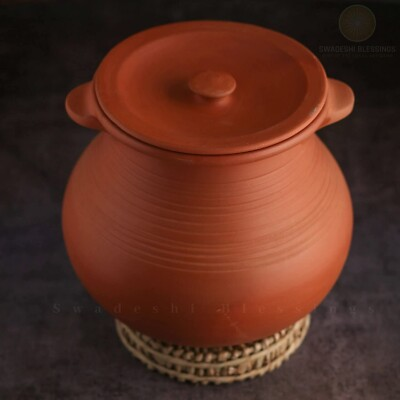
Ceramics reflect both ancient handcraft and modern material science.
History and Background
Chinese Ceramics
Chinese ceramics represent one of the world's oldest and most sophisticated ceramic traditions, spanning over 8,000 years of continuous development. The earliest Chinese pottery dates back to the Neolithic period around 10,000 BCE, with simple hand-built vessels used for cooking and storage. By the Shang dynasty (1600-1046 BCE), potters were creating ritual bronzes that influenced early ceramic forms. The Zhou dynasty saw the development of primitive porcelain, though true porcelain emerged during the Han dynasty (206 BCE-220 CE) with high-fired stoneware. The Tang dynasty (618-907 CE) marked a golden age with sancai glazed pottery featuring vibrant green, yellow, and white glazes imported from the Middle East. Song dynasty (960-1279 CE) potters perfected celadon glazes and developed the first true porcelain, characterized by its translucency and fine texture. The Yuan dynasty introduced blue-and-white ware using cobalt imported from Persia, while the Ming dynasty (1368-1644 CE) elevated porcelain to imperial art with intricate designs and massive production. Qing dynasty (1644-1911 CE) continued this tradition with famille rose and famille verte enamels. During the 20th century, Chinese ceramics faced challenges from industrialization but revived through artists like those at the Jingdezhen porcelain factory. Today, China remains the world's largest producer of ceramics, blending traditional techniques with modern technology. Contemporary Chinese ceramicists explore abstract forms, environmental themes, and fusion with Western aesthetics. The Belt and Road Initiative has revived ancient trade routes, exporting Chinese porcelain globally. Modern production uses automated kilns and digital design, yet traditional hand-painting persists in luxury markets. Chinese ceramics have influenced global design, from Japanese tea bowls to European delftware. The material embodies Chinese philosophy, with forms reflecting balance, harmony, and the interplay of yin and yang. Archaeological discoveries continue to reveal new aspects of this rich tradition.
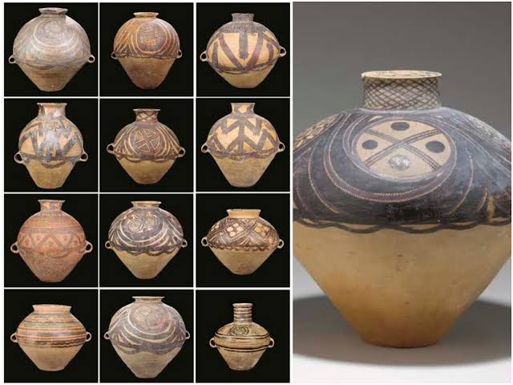
Chinese ceramics evolved from utilitarian vessels to imperial treasures, reflecting 8,000 years of cultural refinement.
Mesopotamian Ceramics
Mesopotamian ceramics trace the development of urban civilization in the Fertile Crescent, beginning around 7000 BCE with the first settled farming communities. Early pottery consisted of simple coil-built vessels with geometric decorations, used for storing grain and water in the world's first cities. By 4000 BCE, potters in Sumer were using the potter's wheel, enabling mass production of standardized forms. The invention of the kiln allowed higher firing temperatures, creating stronger, more durable ceramics. Mesopotamian potters developed the first glazes around 3500 BCE, using silica-based coatings that made vessels waterproof. They created intricate relief decorations depicting gods, kings, and mythical creatures. Bricks became a major ceramic product, used to build ziggurats, palaces, and defensive walls. The Assyrian and Babylonian periods saw advances in polychrome glazes and complex vessel forms. Mesopotamian ceramics influenced neighboring cultures through trade, spreading techniques to Egypt, Anatolia, and the Indus Valley. They developed specialized wares for different purposes: storage jars for grain, drinking vessels for banquets, and ritual objects for temples. The material reflected social hierarchy, with fine wares reserved for elites and simpler pottery for common use. Mesopotamian potters invented transfer printing and mold-making techniques that influenced later civilizations. Their ceramics documented history through inscribed tablets and decorated vessels. The tradition continued through Persian, Hellenistic, and Islamic periods, adapting to new cultural influences. Modern archaeology reveals the sophistication of ancient Mesopotamian ceramic technology. Today, Iraqi potters preserve some traditional techniques while adapting to contemporary needs. Mesopotamian ceramics laid the foundation for many modern ceramic practices, from glazing to mass production.
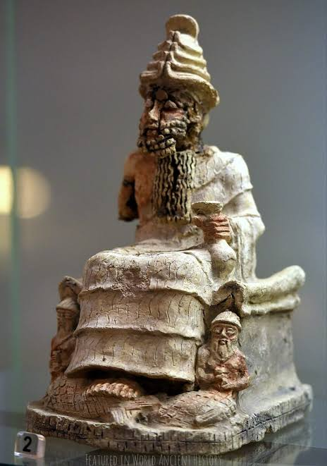
Mesopotamian ceramics built the first cities and recorded the first histories in clay.
Egyptian Ceramics
Egyptian ceramics span from prehistoric times to the Islamic period, serving both practical and spiritual purposes in one of the world's longest continuous civilizations. The earliest Egyptian pottery dates to the Badarian culture around 4400 BCE, with simple red-polished wares used for cooking and storage. By the Naqada period, potters were creating distinctive black-topped red pottery with incised decorations. The Old Kingdom (2686-2181 BCE) saw the development of faience, a glazed ceramic material made from crushed quartz and alkali salts. Faience was used for jewelry, amulets, and small sculptures, prized for its bright blue color resembling lapis lazuli. During the Middle Kingdom, potters perfected wheel-throwing and developed new vessel forms for daily use. The New Kingdom (1550-1070 BCE) brought international influences through trade, with Mycenaean and Cypriot styles appearing in Egyptian wares. Ceramics played crucial roles in burial practices, with canopic jars, ushabti figures, and offering vessels placed in tombs. Egyptian potters invented the first true glass, though faience remained more common for decorative objects. They developed complex glazing techniques using copper and cobalt for blue and green colors. The Ptolemaic and Roman periods introduced Hellenistic influences, blending Greek forms with Egyptian traditions. Coptic Christian ceramics from the Byzantine period featured crosses and religious motifs. Islamic Egyptian potters continued the tradition with lusterware and underglaze painting. Modern Egyptian ceramics blend traditional Islamic designs with contemporary forms. The Nile's clay deposits provided ideal materials for pottery throughout history. Egyptian ceramics reflected the society's emphasis on the afterlife and divine order. Archaeological finds from tombs reveal the sophistication of ancient Egyptian ceramic technology.
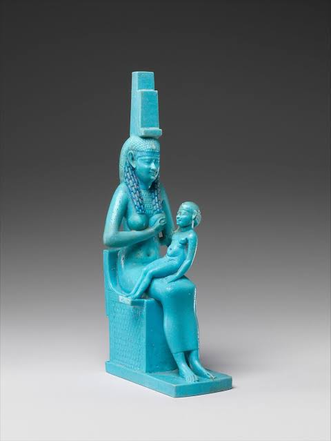
Egyptian ceramics served the living and the dead, bridging this world and the afterlife.
American Ceramics
American ceramics encompass diverse indigenous traditions and European-influenced developments across North, Central, and South America. The earliest American pottery appears around 2500 BCE in the Andes, with Valdivia culture vessels showing complex firing techniques. In North America, the Adena culture (1000 BCE-200 CE) created elaborate burial pottery with geometric designs. The Mississippian culture (900-1600 CE) developed sophisticated ceramics with shell-tempered clay and intricate incised patterns. Southwest pueblos created distinctive black-on-white pottery with mineral paints. The Mimbres culture excelled in narrative bowls depicting animals, humans, and geometric designs. In Mesoamerica, the Olmec (1200-400 BCE) produced hollow ceramic figures and vessels with naturalistic forms. Maya potters created polychrome vessels with hieroglyphic texts and mythological scenes. Aztec ceramics included both utilitarian wares and ritual objects with symbolic decorations. In South America, Inca potters developed aryballos bottles and fine serving vessels. European colonization brought wheel-throwing and glazing techniques, leading to majolica and delftware production. The Industrial Revolution mechanized American ceramics, with factories producing tableware and tiles. The Arts and Crafts movement revived studio pottery in the early 20th century. Contemporary Native American potters continue traditional techniques while innovating new forms. Modern American ceramics include both functional pottery and sculptural art. The field encompasses everything from mass-produced dinnerware to one-of-a-kind gallery pieces. American ceramicists have pioneered new materials and firing techniques. The diversity of American ceramics reflects the continent's cultural complexity.
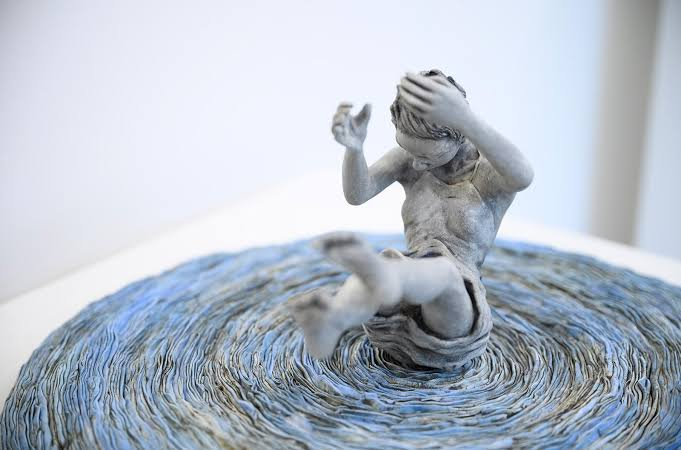
American ceramics weave together indigenous wisdom and immigrant innovation across millennia.
Sub-Saharan African Ceramics
Sub-Saharan African ceramics represent one of the world's most diverse ceramic traditions, with each region developing unique styles adapted to local clays, climates, and cultures. West African pottery includes the Nok culture's terracotta sculptures from 500 BCE-200 CE, featuring naturalistic human and animal figures. Yoruba potters create ritual vessels and shrine objects with complex iconography. In Central Africa, the Sao culture produced distinctive pottery with perforated designs and zoomorphic forms. East African ceramics include the distinctive incised wares of the Great Lakes region, often used for beer storage. Southern African potters developed burnished blackware and coiled vessels with geometric patterns. The Zulu and Xhosa peoples create pottery for ceremonial and domestic use. In Ethiopia, ancient Aksumite ceramics featured red-slipped wares with incised decorations. African potters pioneered techniques like smoking vessels for black surfaces and using natural oxides for colors. Ceramics play central roles in African rituals, from ancestor worship to initiation ceremonies. Many African ceramic traditions remain unbroken, passed down through generations of women potters. Modern African ceramicists blend traditional forms with contemporary themes, addressing issues like urbanization and cultural identity. The continent's ceramic diversity reflects its linguistic and ethnic complexity. African ceramics have influenced global design through diaspora communities. Contemporary artists like Magdalene Odundo explore African forms in international contexts. The resilience of African ceramic traditions despite colonization and modernization is remarkable. Many techniques developed independently of Eurasian influences, showing the creativity of African innovation.
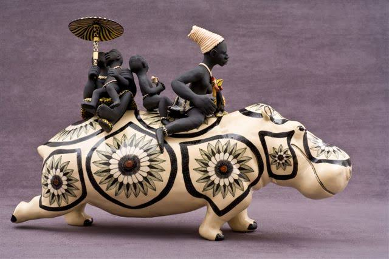
African ceramics express the continent's spiritual depth and artistic diversity through clay.
European Ceramics
European ceramics evolved from Roman terra sigillata to modern porcelain, reflecting the continent's complex history of innovation and cultural exchange. Roman potters created red-glazed wares with molded decorations, exported throughout the empire. The Byzantine period continued Greek traditions with glazed tiles and vessels. Islamic influences brought lusterware and tin-glazed pottery to Spain and Italy. Italian majolica of the Renaissance featured vibrant colors and narrative scenes. Dutch Delftware imitated Chinese porcelain with blue-and-white designs. German stoneware developed in the Rhineland, prized for its durability. French faience centers like Rouen and Nevers produced elaborate decorative wares. The discovery of kaolin in Saxony led to the invention of European porcelain in 1708 by Johann Friedrich Böttger. Meissen porcelain became the standard for luxury ceramics, copied throughout Europe. The Industrial Revolution mechanized ceramic production, making wares affordable for middle classes. British Wedgwood developed creamware and bone china, revolutionizing tableware. Art Nouveau and Arts and Crafts movements revived studio pottery as artistic expression. Modern European ceramicists like Pablo Picasso and Joan Miró explored ceramics as fine art. Contemporary European ceramics blend traditional techniques with contemporary design. The continent remains a center for ceramic innovation, from Italian design to Scandinavian minimalism. European ceramics have shaped global taste through colonialism and trade. Modern production emphasizes sustainability and ethical sourcing. European ceramic education remains world-class, training artists from around the globe.
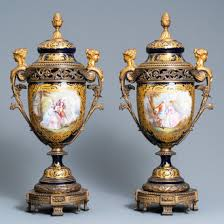
European ceramics transformed imported techniques into distinct national styles and global exports.
Japanese Ceramics
Japanese ceramics blend indigenous Jomon traditions with imported Chinese and Korean influences, creating one of the world's most refined ceramic cultures. Jomon pottery (14,000-300 BCE) featured cord-marked surfaces and flame-shaped vessels, some of the earliest pottery in East Asia. Yayoi period introduced wheel-throwing and simpler forms. The Nara period (710-794 CE) brought Korean and Chinese techniques, including green glazes. Heian period saw the development of temmoku tea bowls for Buddhist ceremonies. Kamakura and Muromachi periods refined raku ware, characterized by irregular glazes and rustic beauty. The Azuchi-Momoyama period introduced Korean-style punch'ong ware. Edo period (1603-1868) saw the rise of kilns like Arita, producing blue-and-white export porcelain. Nabeshima ware featured intricate gold decorations for the aristocracy. The Meiji Restoration modernized ceramic production while preserving traditional techniques. Modern Japanese ceramicists like Shoji Hamada and Bernard Leach influenced international studio pottery. Contemporary Japanese ceramics emphasize wabi-sabi aesthetics, finding beauty in imperfection. Techniques like neriage (marbled clay) and kintsugi (gold repair) reflect philosophical concepts. Japanese ceramics play central roles in tea ceremony, with specific wares for different seasons. Modern production combines traditional craftsmanship with industrial precision. Japanese ceramic education emphasizes both technical skill and spiritual discipline. The country's ceramic diversity spans from minimalist raku to elaborate Kutani polychrome. Japanese ceramics have influenced global design through their emphasis on harmony and simplicity.
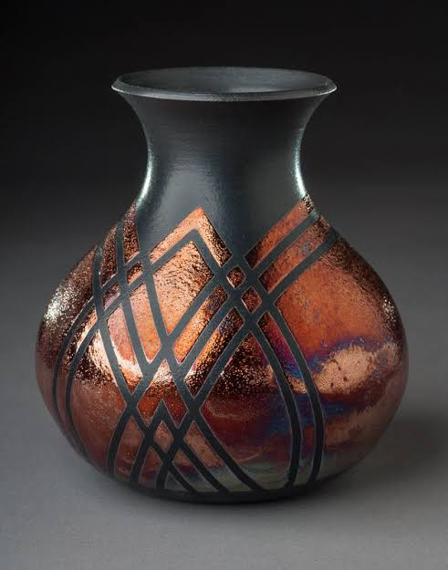
Japanese ceramics embody the philosophy of wabi-sabi, finding perfection in imperfection.
Islamic Ceramics
Islamic ceramics developed sophisticated techniques and aesthetics across a vast geographical area from Spain to India, spanning over 1,000 years. Early Islamic pottery continued Sassanian and Byzantine traditions with simple glazed wares. The Abbasid period (750-1258 CE) saw the development of lusterware, created by applying metallic oxides and refiring. Iraqi potters invented tin-glazing, leading to the production of Hispano-Moresque ware in Spain. Persian potters created minai ware with overglaze enamels depicting courtly scenes. Ottoman ceramics featured Iznik tiles with vibrant cobalt blue and red designs. Mughal potters in India developed polychrome wares with naturalistic floral motifs. Islamic ceramics avoided figurative representation, focusing on geometric patterns and calligraphy. The art of tile-making reached perfection in mosques and palaces across the Islamic world. Ceramics played important roles in architecture, medicine, and daily life. Islamic potters developed complex glaze chemistries using minerals from across their empires. The tradition influenced European ceramics through trade and conquest. Modern Islamic ceramicists preserve traditional techniques while exploring contemporary forms. Islamic ceramics reflect the unity and diversity of Islamic civilization. The geometric patterns embody mathematical and spiritual concepts. Contemporary production blends traditional motifs with modern design. Islamic ceramic heritage continues to inspire artists worldwide. The sophistication of Islamic ceramic technology rivaled that of China and Europe. Islamic ceramics served both spiritual and utilitarian purposes across vast territories.
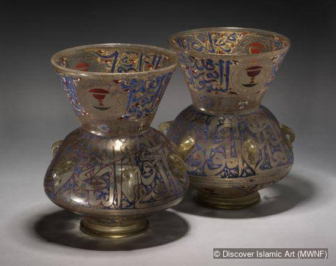
Islamic ceramics transformed geometry and calligraphy into eternal art through fired clay.
Materials and Processes
Ceramics begin with clay, a natural material made of fine mineral particles and water. Different clays produce different ceramic bodies. Earthenware clay is soft and fires at low temperatures, producing porous but colorful pottery. Stoneware clay fires hotter and becomes strong and dense. Porcelain clay is refined and fires at very high temperatures to become white, translucent, and glass-like. Beyond clay, ceramic bodies may include sand, feldspar, grog, and other additives to control shrinkage and firing behavior.
The basic ceramic process includes shaping, drying, firing, and often glazing. Shaping can be done by hand-building methods such as pinching, coiling, and slab construction. The potter’s wheel allows faster thrown forms and symmetrical vessels. Mold casting is used for identical shapes and mass production. Once shaped, clay must dry slowly to avoid cracking. It is first leather-hard, then bone-dry before the first firing, called the bisque firing.
The first kiln firing hardens the clay and makes it durable. Earthenware fires between 900°C and 1100°C, stoneware between 1200°C and 1300°C, and porcelain above 1300°C. Glazes are applied after bisque firing or as an underglaze decoration before a glaze coating. The glaze melts into a glassy surface during a second firing. Glaze chemistry includes silica, alumina, fluxes, and colorants. Lead and tin were common historical fluxes, but modern glazes use safer alternatives. Decorative techniques include painting, sgraffito, slip trailing, stamping, and decals.
High-tech ceramics follow the same general sequence but use extremely pure materials and controlled atmospheres. Advanced ceramic components are shaped by pressing, injection molding, tape casting, and extrusion. They are fired in electric or gas kilns under precise temperature ramps. Technical ceramics may also be sintered, hot-pressed, or hot-isostatically pressed to achieve high density and mechanical strength. These materials can resist temperatures above 1000°C, conduct or insulate electricity, and survive corrosive environments.
Clay, shaping, firing, and glazing are the four elements that define ceramic making.
Styles and Cultural Traditions
Ceramics are not only technical objects but also carriers of culture. Different regions developed their own ceramic languages and decorative systems. In China, porcelain became a symbol of refinement and export. In Japan, raku tea bowls and kutani ware embody simplicity and ritual. In the Islamic world, lustreware and tile mosaics combined geometry and calligraphy. European faience and Delftware reflected local tastes and imported Asian motifs. In West Africa and the Americas, hand-built pottery often carries patterns linked to ritual, clan identity, and daily life.
Ceramics have been used for architecture as well as objects. Glazed tiles decorate mosques, palaces, and temples from Turkey to India. Ceramic roof tiles protect buildings in China, Japan, and Europe. In modern architecture, ceramic façades and tiles are chosen for durability and aesthetics.
Historic ceramic objects also tell stories about trade and exchange. Chinese porcelain was traded along the Silk Road and later by sea to Europe and Africa. European potters copied Asian shapes and developed their own wares. Indigenous pottery in the Americas includes both functional cooking vessels and highly decorated ceremonial forms. Today, contemporary artists combine traditional motifs with personal expression, turning ceramics into a global art form.
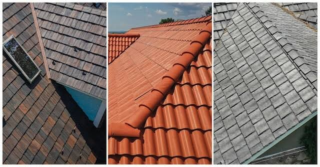
Ceramic styles reveal the values and aesthetic choices of every culture that used clay.
Modern Ceramics
Modern ceramics extend from art pottery to technical materials. In the twentieth century, designers like Emile Gallé, Lucie Rie, and Bernard Leach redefined studio pottery as artistic expression. Meanwhile, engineers developed advanced ceramics for industry. Alumina, zirconia, silicon carbide, and silicon nitride are used in cutting tools, bearings, electronic insulators, and heat exchangers. Ceramic matrix composites are used in jet engines and spacecraft because they resist extreme heat and stress. Bioceramics such as hydroxyapatite and alumina are used for hip replacements, dental implants, and bone scaffolds.
Contemporary ceramic art often blurs the line between craft and sculpture. Artists use glaze, surface texture, and form to express concept, narrative, and emotion. Ceramic installations appear in galleries and public art projects. In design, ceramic tiles, sanitaryware, and tableware remain important for interiors and kitchens. Modern kitchen ceramics combine hygiene, color, and functional design. Architects use porcelain slabs and glazed stoneware for façades, cladding, and decorative surfaces.
Ceramics also play a crucial role in sustainability. Ceramic filters purify water, ceramic membranes separate gases, and ceramic-coated electrodes improve battery lifetimes. Recycled clay waste and low-energy firing technologies are becoming more common in studio and industrial ceramics. Green building standards now recognize ceramic tiles and bricks for their long life and low maintenance.
Modern ceramics span art, architecture, medicine, and advanced engineering.
Careers and Future
Ceramics offer a wide range of careers in studio craft, industrial design, architecture, materials science, and cultural heritage. Studio potters make decorative and functional objects, teach workshops, and sell work through galleries and markets. Industrial ceramicists design and test materials for electronics, aerospace, energy, and medical implants. Ceramic conservators restore historic tiles, pottery, and sculpture. Educators teach ceramics in schools, universities, and community studios. Curators and historians research ceramic traditions and organize exhibitions.
The future of ceramics includes sustainable production, digital fabrication, and new composite materials. Additive manufacturing is enabling ceramic 3D printing for complex shapes and custom parts. Researchers are also exploring smart ceramics that change properties with temperature, electricity, or light. As the world seeks durable, recyclable, and high-performance materials, ceramics will continue to be central to both creative practice and technological innovation.
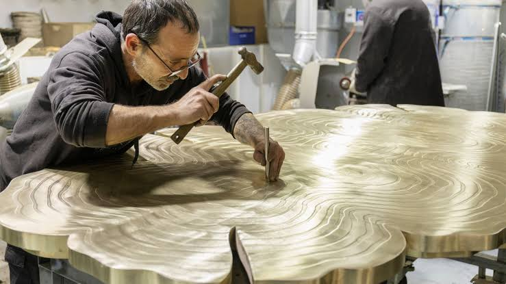
Ceramics careers combine creativity, craftsmanship, and material science.